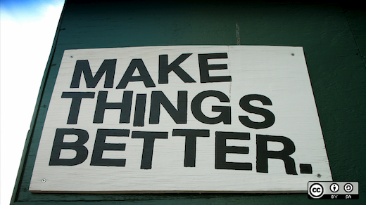
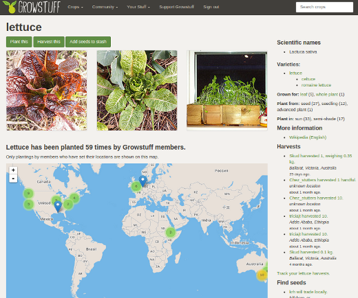

也紀念我們永遠的朋友 李士傑先生（Shih-Chieh Ilya Li）。
來自開放糧食開發者的古老訊息
本文翻譯自 Opensource.com，原作者是 Sumana Harihareswara Feed和 Alex Bayley 合著而成：https://opensource.com/life/14/11/growstuff-open-source-food

Growstuff 是一個開源的作物資料庫專案，資料來自於種植者的知識，由群眾外包提供下列資訊，包含誰種了什麼樣的作物、種植的時間與地點，以及他們打算怎麼樣收穫。你可以在 Github 上找到專案頁面。
先不要去想開放源碼要如何改變糧食的世界。讓我們一起想想，開放源碼會如何改變我們接觸科技的途徑。
農業不僅是人類所建立世界上最古老的科技之一，也是最古老的開放文化。
近數十年間農業在西方國家變得封閉。工業化之後，特別是二十世紀中期，人造肥料更強化了這樣的封閉性，把食物從土地送上餐桌的科技將我們之間的距離拉遠了。只有少數人知道雞肉變成麥克雞塊的步驟，或是該怎麼將蕃茄做成蕃茄醬——跟知道如何編寫自己的軟體，或是和關心是否有編寫軟體自由的人數一樣少。
然而，農業在世界上許多國家仍遵循著傳統的方式一脈相承。即使是已開發國家，傳統的農業模式仍在小規模的種植者、遺傳育種者、還有像是植物銀行、社群花園、慢食團體等組織或社群中開放地分享關於食物的知識。開源社群可以從現有的食物運動中學習，它們是世界上持續最久的開放社群，有一定程度的多樣性，還有草根的組織經驗，應該會讓許多開源專案羨慕不已。

來自世界各地糧食種植者的開放資料
2012年的時候，Alex Bayley 在專題演講中提到開放源碼可以向其他開放社群學習什麼，學習的對象也包括了大部分時候都沒有連上網路的種子銀行和社群農場。另一位演講者，GNOME 的創立者 Federico Mena Quintero 表示他也在思考類似的事情，他已經試圖在社群中建立開放源碼與同儕生產 (peer production) 之間的連結，像是樸門 (Permaculture) （註1）和傳統森林景觀一樣。Federico 生活在墨西哥，他在尋找適合當地氣候的種植建議時遇到了困難，於是找上 Alex 詢問哪裡可以找到有關作物的開放資料。不幸地，大部分可以取得的資料不是針對美國，就是目標大規模農業，或是針對科學家；幾乎沒有能夠連結到資料群是在後院耕種的小農可以使用的。
來自於政府或是其他大型組織「從上到下」式的開放資料，鮮少為了小農或是其他沒辦法傳達需求的糧食社群服務。如果我們想要一份實用的開放糧食資料，我們會需要群眾外包、同伴對同伴的網路還有分散式的管道。開放糧食計畫需要「由下而上」的努力，應反映出如食物系統一般的多樣性——聯合國承認比起大規模、中央型的發展，多樣性更可以帶領大家進入更永續的未來。
這些認知讓 Alex 決定建立 Growstuff，這是一個開源專案一個開源的作物資料庫專案，資料來自於種植者的知識：由群眾外包提供誰種了什麼樣的作物、種植的時間與地點，以及他們打算怎麼樣收穫。Growstuff 認知到種植時間、微氣候的適合作物、害蟲辨識等與植物生長的相關知識周已經存在於全世界種植者的腦中。除非你已經和當地的農作社群建立了良好的社交關係，否則這些知識非常難以取得。Growstuff 幫忙匯集當地種植資訊，也幫忙在種植者之間建立連結，全世界性地支持小規模農業。
歡迎多樣化的糧食社群
開源的糧食專案必須要和規模較大、非科技背景的開放糧食界建立連結。糧食界的人和組織共享著一個巨大的主流知識體，這些知識是藉著細心實作以及長期觀察聚集而成的。我們需要去到他們所在的地方、去熟悉他們的語言、操作方法還有概念架構，並以成熟的尊重和合作成為兩個不同世界的橋樑。開源社群有可能會不夠友善、精英主義、講話充滿術語，但我們必須去反抗這些情況，並讓我們的糧食專案不管對擁有糧食技能的人或擁有科技技能的人都同樣包容、友善。
當女性生產了世界一半以上的糧食，開源的性別議題在這裡特別的要緊，Growstuff 認為有很多可以和現有的糧食社群學習的地方。從第一天開始，這個專案就設計成要把開發者和種植者一起納入，並聚焦於透明的溝通，如同開源的程式碼一樣。 結果就是這個專案有了差異顯著的貢獻者，成員分佈橫跨六個大陸，並反映出幅員廣大的食物文化。對科技人來說，對食物應有的方式做出假設很容易，但食物其實和科技一樣是一種文化。科學家看作物的時候，看見的是品種，但是對種植者或廚師來說，羽衣甘藍、球芽甘藍、和花椰菜即使分享了同樣的學名，他們還是不同的蔬菜。
開放生態系統
我們的專案一樣需要內部運作 (interoperate) 。當開放糧食版圖中的所有片段互相連結在一起的時候，它才會是最強大的。像開放糧食基金會 (Open Food Foundation) 這樣的團體幫助糧食專案的成員間彼此聯繫，討論我們在程式、資料和策略上可以如何協同工作。在這個當下，單純的識別出正在活躍的專案並了解他們在生態系之中的位置是我們最重要的任務。我們有部份的工作室鼓勵開放糧食專案提供開放的 API 和資料，並使用被廣泛接納的授權，並在幾個關鍵的面向上共工溝通，例如：連結不同專案中作物與產品的資料。如果我們可以結合為了種植作物而開發的 Growstuff 、為了糧食分配 而開發的 Open Food Network，和為了營養開發的 OpenFoodFacts …等應用程式，而追蹤食物從產地到消費端的整個過程，那麼便可以算是成功了！
賦權、而非分裂
身為科技人，我們曾極力主張現有的產業可以「賦權」(disrupt)，但糧食界曾被迫賦權給高密度經濟農作，而種種問題隨之而來。開源社群已經建立了網路上分散合作的經驗，讓我們先用觀察代替使用科技，授權給糧食生產者和消費者，並鞏固糧食社群現有的工作成果。當我們成為其中一份子的時候，讓我們自己也開放吧，看看人類歷史中最長壽的開放社群可以帶給開源界什麼樣的進步！
註解
註 1：根據維基百科上的介紹，樸門是把原生態、園藝和農業及許多不同領域知識相結合，透過結合各種元素設計而成的准自然系統。
專欄總覽


E-Mail：contact@openfoundry.org Address：台北市南港區研究院路2段128號 中央研究院資訊科學研究所 . 隱私權條款. 使用條款